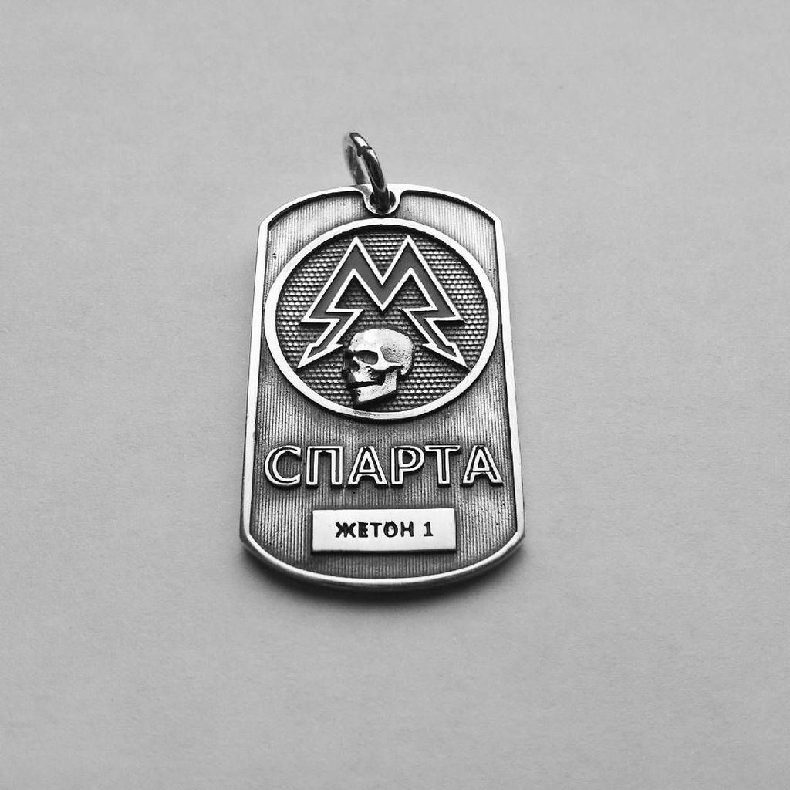
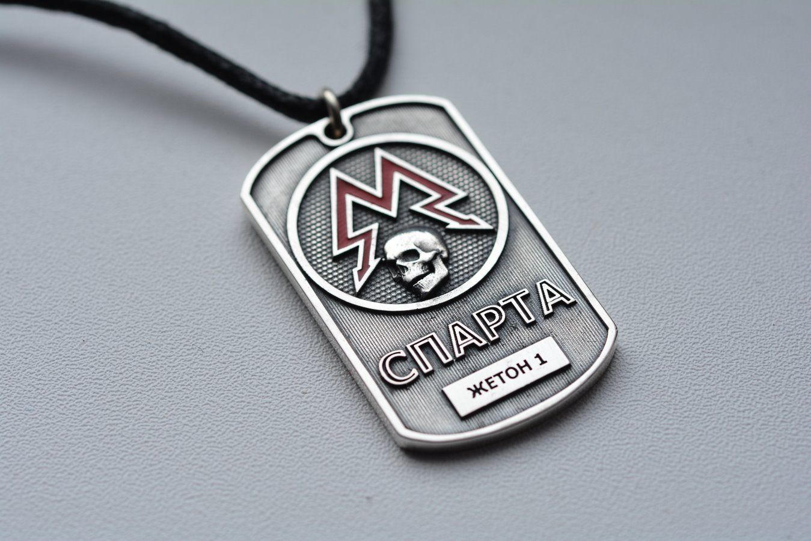

Жетон Спарты
 
540 рублей
Описание товара
Описание товара
Cтальной жетон Метро с лазерной гравировкой.
Характеристика товара
- Количество: 1
- Название бренда: Нет
- Происхождение: Россия
- Материал: Металл
- Стиль: Классический
- Тип товара: Подвеска
- Вес: 150 грамм
Подробное описание товара
События игры переносятся за восемь дней до битвы у Останкинской телебашни, начавшись с пробуждения Артёма на станции метро ВДНХ. Станция стала его родным домом после того, как его сюда привёл отчим Александр Сухой. Он познакомил Артёма с человеком по имени Хантер, который впоследствии помогал отбивать атаки мутантов. По словам Сухого, атаки являются не столь опасными по сравнению с угрозой появления чёрных таинственных гуманоидных существ, проникающих через выход станции Ботанический сад.Чёрные могут негативно воздействовать на психику людей на расстоянии и использовать свою психическую энергию, преобразовывая её в физическую энергию большой мощности. Хантер пытается выяснить больше об этих существах и найти способы уничтожить их. Перед уходом со станции Хантер даёт Артёму жетон сталкера, поручая отправиться в Полис, наиболее могущественную группу станций в метрополитене, и попросить помощи у Мельника в случае, если сам Хантер не вернётся на следующий день.